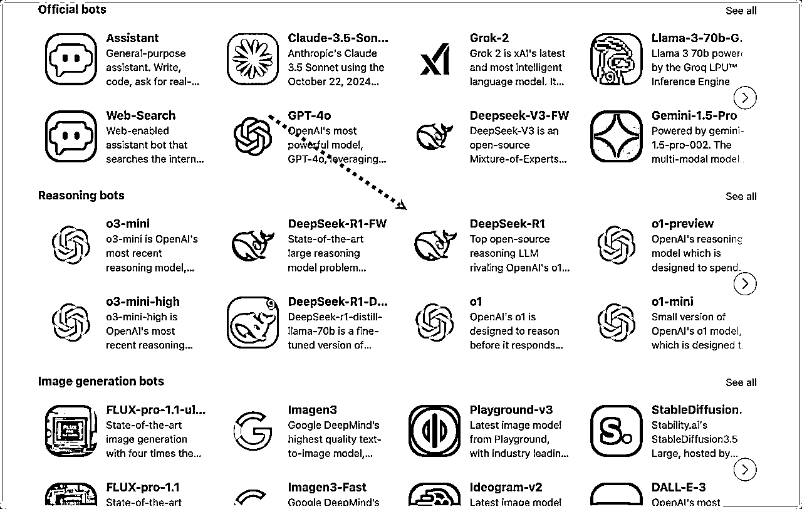

来源：https://zzi7a49xoa.feishu.cn/docx/RQFNdiFGfoPH8nxlzfacuaPIn2b
"DeepSeek 又崩了！"
这句话最近在各个 AI 交流群里经常出现。
眼看着别人已经用 DeepSeek 创造价值，自己却只能面对服务器繁忙的提示。
别担心！
经过这几天的研究，我整理出了几个稳定又免费的 DeepSeek R1 平台，让你告别排队焦虑。
而且不只是对话，某些平台还支持 API 免费调用，让你能真正把 AI 能力整合进工作流程。
最后, 我会介绍 本地部署 DeepSeek 搭建个人 AI 知识库 的详细步骤。
由于各大平台流量剧增，可能会出现不稳定、临时挂掉的情况。
如果出现挂掉可以继续选择其他平台。
前段时间，华为云和硅基流动联合推出了 满血版 DeepSeek R1。
最重要的是，注册就送 2000 万 Token。
Token 过去我的很多文章都有解释过：它可以是一个单词、标点符号、一个汉字，它的存在是把文本切分成更小的单元，方便模型处理。
那 2000 万 Token 是什么概念？
虽然不同的模型有不同的计算方式，我们可以这样简单理解：
假设一本普通的小说，每页有 300 个汉字（中文）或者 300 个单词（英文），那么 2000万 Token 相当于大约6.6 万页的书。
如果按照一本 300 页的书来算，那就是 220 多本书。相当于一个超大书架的藏书量。
那，在硅基流动上，具体怎么使用 DeepSeek R1 呢？
1、注册，地址：https://cloud.siliconflow.cn/i/TAAOvaXg
2、模型广场找到 R1。
3、输入提示词开始对话。
如果需要使用 API，选择模型时，我们能找到 API 文档，按照指示接入 R1 模型。
这里有个小技巧，利用 Cursor 或 Trae 等AI IDEA，获取 API 代码示例，就能快速完成接入。
无论是硅基流动，还是 Lambda，以及接下来介绍了各种平台，他们都会面临一个问题：联网搜索 ~
目前只有官方支持联网搜索，我试了下 Lambda 和硅基流动，数据都是去年的。
打开秘塔，勾上长思考试试。
地址：https://metaso.cn/
没错，答案就是最新的——今年七大姑八大姨饭桌上，强烈安利给我的电影——《哪吒》！
最近几天影评不错，听说剧情很完美，就是有点费腰，毕竟得坐 2 个半小时……😆
国家队也开始下场，支持 DeepSeek 全民使用。地址：https://chat.scnet.cn/
网上很多人说有32B、14B、7B，但是我验证发现只有 DeepSeek-R1-Distill-Qwen-7B 。
参数是小了点，如果其他平台用不了，本地部署也没有硬件，最后再考虑用用国家超算互联网。
如果你有魔法，且只需通过聊天窗口使用，那首推 Lambda.chat，它速度超快。
这样能避免我们受各种天文参数、API 代码接入方式的干扰。
就是一个词：纯享 ~
地址：https://lambda.chat/
除了满血 671B DeepSeek R1，还支持大量不同参数的 Llama 模型选择使用。
虽然 DeepSeek-R1 的出现，让 英伟达市值蒸发近 6000 亿刀。
但这并不妨碍英伟达 积极拥抱它，毕竟——打不过，就加入！ 😆
前段时间，NVIDIA 用最新的 HGX H200 服务器部署了满血版 DeepSeek-R1，直接把推理速度提升到 惊人的 3,872 Token/s！ 🚀
要知道 GPT-4 只有 150 Token/s，Claude-3 也不过 200-300 Token/s，英伟达简直“豪”无人性 ~
具体怎么用？
一个邮箱注册就能搞定。我测试了下，甚至免登录也可以直接使用。
地址： https://build.nvidia.com/deepseek-ai/deepseek-r1
右侧直接能看到 API 接入代码。
作为众多国内 AI 深度用户 的日常工具，Poe 自然不会错过 DeepSeek-R1 这波巨大的流量红利。
官方版本 直接拉满：输入上下文 164K、输出上限 33K。

如果你需要在同一个问题上生成大量文本（比如写长文档或长代码），那就可以试试 DeepSeek-R1-FW。
因为它支持比官方 R1 更多的输出长度，除了同时可以处理 164k 输入 token，同时还具备 164k 输出 token 的能力。
但是，常规问题，用 DeepSeek-R1 即可。
除了满血的DeepSeek R1，若无需硬件条件，想测试一些大参数的蒸馏版本，比如 70B，Grop 也是一个选择。
登录后，在左上角找到 Deepseek-R1-Distill-Llama-70b，就能愉快玩耍啦。
一个需要魔法的平台。
有一些的免费额度，可以作为备用平台。
地址：https://api.together.ai/playground/chat/deepseek-ai/DeepSeek-R1
这是一个完全适合开发者的 DeepSeek API接入平台。
普通用户，如果不关心 API，可以跳过这一章，继续往下看。
对于开发者来说 ，潞晨云平台为 DeepSeek-R1 系列模型，提供从满血 671B 大模型到高效蒸馏小模型多种灵活选择。
重点来了，目前 API 无限量限时免费开放体验。
地址：https://cloud.luchentech.com/maas/modelMarket
至于能用多久，暂时未知。
使用方法：
1、生成密钥。
2、打开 API 文档，找到代码样例。比如，这里我找到了 curl example。
导入 curl 代码进入在线 ApiFox，测试连通性，地址：https://app.apifox.com
3、粘贴从官方复制过来的密钥。
4、点击发送进行测试。搞定~
接下来具体怎么用，有技术背景的朋友想必不需要我多介绍啦~
要是没有技术背景，可以参考我过去写的 AI 编程文章，借助 Cursor 辅助完成应用开发。
最近很多朋友都在问：怎么本地部署 DeepSeek 搭建个人知识库。
老实说，如果你不是为了研究技术，或者确实需要保护涉密数据，我真不建议去折腾本地部署。
为什么呢？
目前 Ollama 从 1.5B 到 70B 都只是把 R1 的推理能力提炼到 Qwen 和 Llama 的蒸馏版本（学生模型）上。
虽说性能是提升了不少，但跟原汁原味的 R1 模型比起来，还是差太多了。
官方的满血版本可是 671B 的参数量，说实话，对普通人来说想本地部署，这成本确实太高了。
不过我最近发现了一个平台，不仅能用上 R1 本 1，还提供了不少免费额度。
此外，为了让拥有算力的朋友可以本地部署，我也提供了相关教程。
本章你会收获：
来看几个使用案例：如何借助 个人知识库文件 作为外脑，用方法论指导我们正确做事？
DeepSeek 确实很好用，但关键还是会不会提问。
如果不会提问，AI 再强也帮不上忙。
除了花时间学习提示词，更快的方式是本地备一份提问指南，让 AI 指导你该怎么正确提问，这样才能真正发挥它的价值！

AI 借助知识库内的 DeepSeek 指导手册，预判了我可能想问的问题，以及建议的正确提示词格式。
从回答中可以发现，AI 不是依据自身语料库回复，而是基于知识库内容回复。

当然，我们也可以直接搜索知识库的原始信息，从而快速查询信息。

如果本地数据不涉密，还想获得最佳使用效果，那肯定得选满血的 DeepSeek R1 模型。
我们来看看怎么利用 API 用上满血的 R1 模型（671 B）。
1、先下载一个叫 Cherry Studio 的软件。
地址： https://cherry-ai.com/download
2、登录/注册「硅基流动」，新用户会赠送 2000万 Token 额度。
地址：https://cloud.siliconflow.cn/i/TAAOvaXg

3、来到 API 密钥生成界面，创建或者复制已有的密钥。

4、来到 Cherry Studio，配置 API Key。

5、在模型广场首页，排在前两位的就是「硅基流动」和「华为云」合作发布的 DeepSeek R1 / V3 模型。
如果需要推理能力，记得打开并复制 R1 模型的名称。
6、在模型服务的硅基流动下方，添加 R1 模型。
7、记得点击检查，测试下 API 是否可以正常访问。

8、现在对话模型有了 R1，还缺少一个嵌入模型。
嵌入模型的主要作用是将本地文件的内容转换成有意义的数字，存储到向量数据库中。
在用户提问时，利用 RAG 技术在数据库中搜索到相似答案，最终回复用户。
过去我有通俗解释过 RAG 技术，大家如果不了解，可以回头看下：
我们再配置一个向量模型：BAAI/bge-m3，如果希望搜索的精准度更高，可以选择 Pro/BAAI/bge-m3。
按照同样的方式配置到 Cherry Studio 中，这里不需要点击检查。

9、在 Cherry Studio 创建知识库，选择刚才配置的嵌入模型，这样就会自动利用对应的模型来向量化数据。

10、上传本地文件进行向量化。
如果本地 PDF 文件是 扫描件、手写件，或者带有复杂的表格 和 数学公式，解析效果会很差，甚至无法解析。
遇到这种情况，建议配合过去我介绍的 PDF 转结构化文档 的方案来使用！！！
这样才可以正常回复知识库的内容：
如果追求执行比，推荐使用 Doc2x：https://doc2x.noedgeai.com?inviteCode=4A6KOD
如果希望更加稳定，那么可以考虑 Textin ：https://www.textin.com/market/detail/pdf_to_markdown
当我们上传文件后，箭头指向的图标如图所示，则代表向量化成功。

11、测试使用，这一步添加助手，并选择刚配置的 满血 R1 模型。

如果不想每次在添加助手时选择模型，可以将它设置为 默认模型。

我们来测试一下，发现 DeepSeek 已经开始深度思考了。

AI 回复的答案和原文一致。

原文内容：
如果只是想 简单体验，或者本地算力充足、希望保护数据安全，那么可以考虑 本地部署 的方案。
1、访问 Ollama 官方地址：https://ollama.com/download，下载软件。
建议下载最新版本 Ollama，个人踩坑经历：旧版本安装 R1 后可能无法正常使用。
2、双击运行 Ollama 后，打开命令行，运行需要安装的模型（参数越大，显存要求越高）。
地址：https://ollama.com/library/deepseek-r1
如果没有 GPU，建议选择 1.5B，运行相对轻量。我这 4G 显存 勉强能跑 8B，但速度较慢。
有朋友用 RTX 4090 测试 32B，效果和速度都不错。大家可以参考这个梯度，根据自己的硬件选择合适的模型。。
下载并运行成功后，就可以和 DeepSeek R1 对话啦。

当然，我们可以用 Cherry Studio 作为本地 R1 模型的 UI 界面。
打开软件的配置，选择 Ollama，在管理按钮中选择自己部署的模型。
如果选不到，就手动添加模型，API 秘钥填不填无所谓）

最后点击检查，测试下网络连通性，出现连接成功即可。

接下来就可以在添加助手时，选择本地部署的 R1 模型啦。

再测试使用一下，答案与原文一致，搞定~
因为我用的是 Mac，所以没测试 Windows 设备。不过两者区别不大，大家可以自行尝试下。
看到这里，相信你已经找到最适合自己的 DeepSeek 个人知识库方案了。
如果你和大多数人一样，选择使用官方 API ，那就不用再为性能和本地硬件资源发愁；
如果你恰好有充足的算力和技术储备，本地部署也是个不错的选择。
本次介绍的这些平台，每个都各具特色。
对国内用户来说，秘塔、硅基流动 是不错的选择。
如果在国外，可以选择国外平台： Lambda、Poe、英伟达。
如果有足够优质的硬件资源，毫无疑问，可以选择本地部署。毕竟数据在本地，才最安全。
每一次技术的迭代，都会带来更多可能。当一个平台暂时无法访问，自然会有新的方案可以接力。
这就是科技发展的魅力 —— 永远充满希望。
因为，我们总能找到更好的解决方案，不是吗？
最后，在整个过程中，我想和你分享的不仅仅是这些技术细节。
而是一个中国团队能做出世界级大模型，一个需要 +86 才能注册的大模型。
很庆幸，我们能作为中国 AI 领域技术进步的见证人。
当然，暂时的领先不是终点。
但 DeepSeek 给我们带来的，是“中国也可以”的这份信心。
这，才是我们真正要守护的希望。
最后，感谢各大平台的无私奉献 ，祝大家玩的开心 ~
我是 🐼 熊猫 Jay，下次再见～